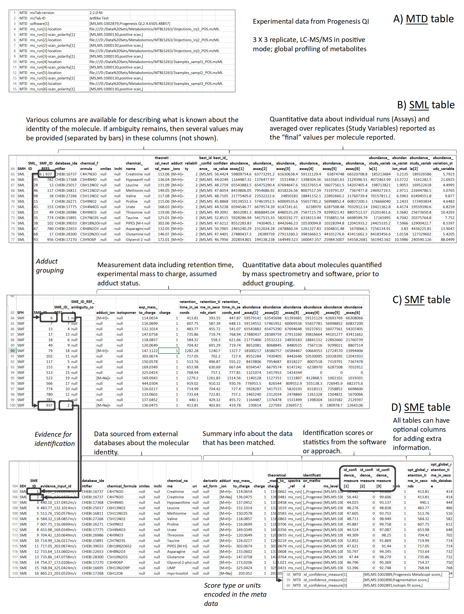

{kind=link}
install.packages("BiocManager")
BiocManager::install("RmzTabM")Introduction
The RmzTabM package provides the API and core functionality to read and write files in mzTab-M format. The functions can be re-used and integrated by other R packages to support import and export of their respective metabolomics/lipidomics result objects in this format.
For a general overview of the mzTab-M format see this figure.

The RmzTabM package supports mzTab-M version 2.1.
Installation
The package can be installed from Bioconductor with:
General information on the mzTab-M format
The mzTab-M format consists of four cross-referenced data tables: metadata (MTD), Small Molecule (SML), Small Molecule Feature (SMF) and the Small Molecule Evidence (SME). The MTD section is supposed to contain all experiment and measurement relevant information. The SML section contains the final results of an analysis that should be reported, i.e., the (annotated) molecules and their respective abundances. The SMF section contains information on the measured (LC-MS) features and their abundance values. The SME section contains information on the annotation process (and reliability) of the molecules reported in the SML section. The SML is supposed to be a subset of the SMF table. The structure and relationship between rows in these different tables is defined by the mzTab-M standard and follows strict rules. The functions from the RmzTabM package assist in creating and formatting these tables.
R mzTab-M API
The RmzTabM package provides low level, core functions and higher-level functions to work with files in mzTab-M format. The high-level functions are more user-oriented, simplifying the import and export of data and information from and to files in mzTab-M format. The low-level, core functions are developer-oriented, providing helper functions that can be re-used in other R packages to read and write from and to mzTab-M files.
For a description of the mzTab-M format and the set of mandatory and optional fields refer to the official format definition.
High-level, user faced functions
In this section we export the data set used in the Metabonaut end-to-end metabolomics data workflow (Louail et al. 2026) in mzTab-M format. The raw MS data is available in MetaboLights (accession number MTBLS8735 with 2 separate MS runs, one with LC-MS and a second with LC-MS/MS data for selected samples). The original xcms preprocessing result object is available in Metabonaut and is included also within the RmzTabM package. After collecting all necessary experimental metadata, we export this result object as a mzTab-M file with only the metadata and the small feature abundances (MTD+SMF).
The RmzTabM package defines a MzTabM() convenience function to create a mzTab-M file from a SummarizedExperiment object. Information provided in such objects is automatically converted and formatted into content for the right mzTab-M section. The user simply needs to define the columns containing information for the various mzTab-M fields and a mzTab-M is compiled. This mzTab-M object should then be completed adding eventually missing data.
Note
ℹ️ individual mzTab-M sections could also be compiled individually with helper functions such as
mtdFromSampleData()to generate a metadata section from a sampledata.frame.
#' required packages
library(SummarizedExperiment)Get the Metabonaut result object
Data preprocessing, normalization, statistical data analysis and annotation is described in Metabonaut (version 1.5.0) (Louail et al. 2026).
The result from the xcms-based preprocessing, a SummarizedExperiment object, is included within the RmzTabM package as the se data set, which we load below.
#' Load the Metabonaut preprocessing result
data(se)
seclass: SummarizedExperiment
dim: 9068 10
metadata(0):
assays(2): raw raw_filled
rownames(9068): FT0001 FT0002 ... FT9067 FT9068
rowData names(11): mzmed mzmin ... QC ms_level
colnames(10): MS_QC_POOL_1_POS.mzML MS_A_POS.mzML ... MS_F_POS.mzML
MS_QC_POOL_4_POS.mzML
colData names(15): sample_name derived_spectra_data_file ... polarity
instrumentThe object contains sample information in colData():
library(pander)
pandoc.table(colData(se) |> as.data.frame(),
style = "rmarkdown", split.table = Inf)| sample_name | derived_spectra_data_file | metabolite_asssignment_file | source_name | organism | blood_sample_type | sample_type | age | unit | phenotype | injection_index | species | tissue | polarity | instrument | |
|---|---|---|---|---|---|---|---|---|---|---|---|---|---|---|---|
| MS_QC_POOL_1_POS.mzML | POOL | FILES/MS_QC_POOL_1_POS.mzML | m_MTBLS8735_LC-MS_positive_hilic_metabolite_profiling_v2_maf.tsv | MS_QC_POOL_1_POS | Homo sapiens | blood serum | pool | NA | year | QC | 1 | [NCBITaxon, NCBITaxon:9606, Homo sapiens, ] | [BTO, BTO:0000133, blood serum, ] | positive | 1 |
| MS_A_POS.mzML | A | FILES/MS_A_POS.mzML | m_MTBLS8735_LC-MS_positive_hilic_metabolite_profiling_v2_maf.tsv | MS_A_POS | Homo sapiens | blood plasma | experimental sample | 53 | year | CVD | 2 | [NCBITaxon, NCBITaxon:9606, Homo sapiens, ] | [BTO, BTO:0000131, blood plasma, ] | positive | 1 |
| MS_B_POS.mzML | B | FILES/MS_B_POS.mzML | m_MTBLS8735_LC-MS_positive_hilic_metabolite_profiling_v2_maf.tsv | MS_B_POS | Homo sapiens | blood plasma | experimental sample | 30 | year | CTR | 3 | [NCBITaxon, NCBITaxon:9606, Homo sapiens, ] | [BTO, BTO:0000131, blood plasma, ] | positive | 1 |
| MS_QC_POOL_2_POS.mzML | POOL | FILES/MS_QC_POOL_2_POS.mzML | m_MTBLS8735_LC-MS_positive_hilic_metabolite_profiling_v2_maf.tsv | MS_QC_POOL_1_POS | Homo sapiens | blood serum | pool | NA | year | QC | 4 | [NCBITaxon, NCBITaxon:9606, Homo sapiens, ] | [BTO, BTO:0000133, blood serum, ] | positive | 1 |
| MS_C_POS.mzML | C | FILES/MS_C_POS.mzML | m_MTBLS8735_LC-MS_positive_hilic_metabolite_profiling_v2_maf.tsv | MS_C_POS | Homo sapiens | blood plasma | experimental sample | 66 | year | CTR | 5 | [NCBITaxon, NCBITaxon:9606, Homo sapiens, ] | [BTO, BTO:0000131, blood plasma, ] | positive | 1 |
| MS_D_POS.mzML | D | FILES/MS_D_POS.mzML | m_MTBLS8735_LC-MS_positive_hilic_metabolite_profiling_v2_maf.tsv | MS_D_POS | Homo sapiens | blood plasma | experimental sample | 36 | year | CVD | 6 | [NCBITaxon, NCBITaxon:9606, Homo sapiens, ] | [BTO, BTO:0000131, blood plasma, ] | positive | 1 |
| MS_QC_POOL_3_POS.mzML | POOL | FILES/MS_QC_POOL_3_POS.mzML | m_MTBLS8735_LC-MS_positive_hilic_metabolite_profiling_v2_maf.tsv | MS_QC_POOL_1_POS | Homo sapiens | blood serum | pool | NA | year | QC | 7 | [NCBITaxon, NCBITaxon:9606, Homo sapiens, ] | [BTO, BTO:0000133, blood serum, ] | positive | 1 |
| MS_E_POS.mzML | E | FILES/MS_E_POS.mzML | m_MTBLS8735_LC-MS_positive_hilic_metabolite_profiling_v2_maf.tsv | MS_E_POS | Homo sapiens | blood plasma | experimental sample | 66 | year | CTR | 8 | [NCBITaxon, NCBITaxon:9606, Homo sapiens, ] | [BTO, BTO:0000131, blood plasma, ] | positive | 1 |
| MS_F_POS.mzML | F | FILES/MS_F_POS.mzML | m_MTBLS8735_LC-MS_positive_hilic_metabolite_profiling_v2_maf.tsv | MS_F_POS | Homo sapiens | blood plasma | experimental sample | 44 | year | CVD | 9 | [NCBITaxon, NCBITaxon:9606, Homo sapiens, ] | [BTO, BTO:0000131, blood plasma, ] | positive | 1 |
| MS_QC_POOL_4_POS.mzML | POOL | FILES/MS_QC_POOL_4_POS.mzML | m_MTBLS8735_LC-MS_positive_hilic_metabolite_profiling_v2_maf.tsv | MS_QC_POOL_1_POS | Homo sapiens | blood serum | pool | NA | year | QC | 10 | [NCBITaxon, NCBITaxon:9606, Homo sapiens, ] | [BTO, BTO:0000133, blood serum, ] | positive | 1 |
LC-MS feature definitions and characteristics in its rowData():
pandoc.table(rowData(se) |> as.data.frame() |> head(),
style = "rmarkdown", split.table = Inf)| mzmed | mzmin | mzmax | rtmed | rtmin | rtmax | npeaks | CTR | CVD | QC | ms_level | |
|---|---|---|---|---|---|---|---|---|---|---|---|
| FT0001 | 50.99 | 50.99 | 50.99 | 203.6 | 201.5 | 208.1 | 8 | 1 | 3 | 4 | 1 |
| FT0002 | 51.06 | 51.06 | 51.06 | 191.2 | 190.1 | 194.5 | 9 | 2 | 3 | 4 | 1 |
| FT0003 | 51.99 | 51.99 | 51.99 | 203.1 | 201.5 | 207 | 7 | 0 | 3 | 4 | 1 |
| FT0004 | 53.02 | 53.02 | 53.02 | 203.2 | 201 | 217.9 | 10 | 3 | 3 | 4 | 1 |
| FT0005 | 53.52 | 53.52 | 53.52 | 203.2 | 201.2 | 209.9 | 10 | 3 | 3 | 4 | 1 |
| FT0006 | 54.01 | 54.01 | 54.01 | 159.3 | 156.5 | 165.1 | 6 | 1 | 3 | 2 | 1 |
and has two assays with feature abundances, one with the original integrated peak areas of identified chromatographic peaks and one with additional gap-filled abundances.
assayNames(se)[1] "raw" "raw_filled"Define the data set’s metadata (MTD)
Comprehensive data set descriptions and metadata are important to enable re-use of the data and follow FAIR principles. Collecting the experiment’s metadata consists mostly of manual work e.g. looking up CV parameters for used instruments or sample tissues. Metadata for samples and related measurements is ideally added to the SummarizedExperiment’s colData(). For the present data set sample characteristics such as the species and tissue are defined in columns "species" and "tissue":
colData(se)$species [1] "[NCBITaxon, NCBITaxon:9606, Homo sapiens, ]"
[2] "[NCBITaxon, NCBITaxon:9606, Homo sapiens, ]"
[3] "[NCBITaxon, NCBITaxon:9606, Homo sapiens, ]"
[4] "[NCBITaxon, NCBITaxon:9606, Homo sapiens, ]"
[5] "[NCBITaxon, NCBITaxon:9606, Homo sapiens, ]"
[6] "[NCBITaxon, NCBITaxon:9606, Homo sapiens, ]"
[7] "[NCBITaxon, NCBITaxon:9606, Homo sapiens, ]"
[8] "[NCBITaxon, NCBITaxon:9606, Homo sapiens, ]"
[9] "[NCBITaxon, NCBITaxon:9606, Homo sapiens, ]"
[10] "[NCBITaxon, NCBITaxon:9606, Homo sapiens, ]"
colData(se)$tissue [1] "[BTO, BTO:0000133, blood serum, ]" "[BTO, BTO:0000131, blood plasma, ]"
[3] "[BTO, BTO:0000131, blood plasma, ]" "[BTO, BTO:0000133, blood serum, ]"
[5] "[BTO, BTO:0000131, blood plasma, ]" "[BTO, BTO:0000131, blood plasma, ]"
[7] "[BTO, BTO:0000133, blood serum, ]" "[BTO, BTO:0000131, blood plasma, ]"
[9] "[BTO, BTO:0000131, blood plasma, ]" "[BTO, BTO:0000133, blood serum, ]" Note
ℹ️ ideally, CV parameters should be used as much as possible to ensure a standardized description of the data. The EMBL-EBI Ontology Lookup Service can be used to find ontology terms (CV parameters) for various controlled vocabularies.
Also measurement-related information are defined in the colData(), including the polarity:
colData(se)$polarity [1] "positive" "positive" "positive" "positive" "positive" "positive"
[7] "positive" "positive" "positive" "positive"We can use this information to compile the data set’s metadata. To this end we define the column names in the SummarizedExperiment’s colData() that contain information for sample, measurement run and assay mzTab-M fields. This mapping of mzTab-M fields to column names can be defined with the sampleCols(), msRunCols() and assayCols() helper functions. We use for example the content of the column "sample_name" for the mzTab-M sample name. Content from the colData() columns "species", "tissue" and "sample_type" is used for mzTab-M sample fields species, tissue and sample_type.
colData(se)$sample_name [1] "POOL" "A" "B" "POOL" "C" "D" "POOL" "E" "F" "POOL"
#' define mapping of `colData()` column names to mzTab-M sample fields
scols <- sampleCols(sample = "sample_name", species = "species",
tissue = "tissue", sample_type = "sample_type")Similarly we specify columns from the same colData() with information on individual MS runs (and assays):
The column "derived_spectra_data_file" contains the MS data file name which we use both to define the MS runs and assays (assuming thus a 1:1 mapping between them).
colData(se)$derived_spectra_data_file [1] "FILES/MS_QC_POOL_1_POS.mzML" "FILES/MS_A_POS.mzML"
[3] "FILES/MS_B_POS.mzML" "FILES/MS_QC_POOL_2_POS.mzML"
[5] "FILES/MS_C_POS.mzML" "FILES/MS_D_POS.mzML"
[7] "FILES/MS_QC_POOL_3_POS.mzML" "FILES/MS_E_POS.mzML"
[9] "FILES/MS_F_POS.mzML" "FILES/MS_QC_POOL_4_POS.mzML"At last we define also the study variables of the experiment. These can be technical characteristics or phenotype(s) of the samples. The present experiment consists of plasma samples of individuals with or without a cardiovascular disease (CVD) and repeated measurements of an external (serum) sample pools that was used as quality control sample. These are defined in colData() columns "blood_sample_type", "age" and "phenotype".
#' technical variable: the sample matrix
colData(se)$blood_sample_type [1] "blood serum" "blood plasma" "blood plasma" "blood serum" "blood plasma"
[6] "blood plasma" "blood serum" "blood plasma" "blood plasma" "blood serum"
#' phenotype of study samples or QC for QC samples
colData(se)$phenotype [1] "QC" "CVD" "CTR" "QC" "CTR" "CVD" "QC" "CTR" "CVD" "QC"
#' age of study participants; NA for QC samples
colData(se)$age [1] NA 53 30 NA 66 36 NA 66 44 NAWith these information defined we can use the MzTabM() function to create a template mzTab-M for the present experiment. Parameter groups defines the column names of the SummarizedExperiment’s colData() to be used as mzTab-M study variable groups.
mzt <- MzTabM(se,
id = "MTBLS8735",
sampleCols = scols,
msRunCols = mscols,
assayCols = acols,
groups = c("age", "phenotype", "blood_sample_type"))
mztObject of class MzTabM
mzTab-M version 2.1.0-M
MTD section with 181 rows.This MzTabM object contains only metadata information, but no abundances/feature data yet. Also, some general metadata are still missing and, if exported to a mzTab-M file, it might not yet validate. We are next adding the small molecule feature (SMF) content and, in the subsequent section Completing the metadata content, adding eventually missing required metadata fields.
Add feature abundance matrix (SMF)
We next add feature abundance information to the mzTab-M. While the abundance values can be taken from one of the assay()s from the SummarizedExperiment, we need to provide also feature characteristics. These are usually available in the SummarizedExperiments rowData():
pandoc.table(rowData(se) |> as.data.frame() |> head(),
style = "rmarkdown", split.table = Inf)| mzmed | mzmin | mzmax | rtmed | rtmin | rtmax | npeaks | CTR | CVD | QC | ms_level | |
|---|---|---|---|---|---|---|---|---|---|---|---|
| FT0001 | 50.99 | 50.99 | 50.99 | 203.6 | 201.5 | 208.1 | 8 | 1 | 3 | 4 | 1 |
| FT0002 | 51.06 | 51.06 | 51.06 | 191.2 | 190.1 | 194.5 | 9 | 2 | 3 | 4 | 1 |
| FT0003 | 51.99 | 51.99 | 51.99 | 203.1 | 201.5 | 207 | 7 | 0 | 3 | 4 | 1 |
| FT0004 | 53.02 | 53.02 | 53.02 | 203.2 | 201 | 217.9 | 10 | 3 | 3 | 4 | 1 |
| FT0005 | 53.52 | 53.52 | 53.52 | 203.2 | 201.2 | 209.9 | 10 | 3 | 3 | 4 | 1 |
| FT0006 | 54.01 | 54.01 | 54.01 | 159.3 | 156.5 | 165.1 | 6 | 1 | 3 | 2 | 1 |
For our example we use column "mzmed" which defines the features’ m/z value which can be mapped to the SMF field exp_mass_to_charge and "rtmed" that reports the median retention time of the feature which can be used for the SMF field retention_time_in_seconds. We will in addition add an optional field feature_id to report and add the IDs of the individual features from the SummarizedExperiment, which we add as a column "feature_id" to the rowData():
Similar to the metadata column mappings above, we define a mapping of SMF fields to rowData() columns using the smfCols() helper function:
smf_cols <- smfCols(exp_mass_to_charge = "mzmed",
retention_time_in_seconds = "rtmed",
feature_id = "feature_id")Providing these additional SMF mapping in the MzTabM() call above will compile a MzTabM object with an MTD and SMF section from the SummarizedExperiment. Parameter assayName defines which of the SummarizedExperiment’s assays will be used the SMF section.
#' Create a MTD+SMF mzTab-M object from the SummarizedExperiment
mzt <- MzTabM(se,
id = "MTBLS8735",
sampleCols = scols,
msRunCols = mscols,
assayCols = acols,
groups = c("age", "phenotype", "blood_sample_type"),
smfCols. = smf_cols,
assayName = "raw_filled")
mztObject of class MzTabM
mzTab-M version 2.1.0-M
MTD section with 181 rows.
SMF section with 9068 rows and 22 columns.Note
ℹ️ we could also use
smf(se, assayName = "raw_filled", smfCols. = smf_cols)to extract the SMF table from theSummarizedExperimentand add that manually to the aMzTabMobject.
This mzt variable contains now the mzTab-M content that could be extracted from the SummarizedExperiment. The first rows of the metadata section are:
pandoc.table(mtd(mzt) |> head(),
style = "rmarkdown", split.table = Inf, justify = "ll")| values | |
|---|---|
| mzTab-version | 2.1.0-M |
| mzTab-ID | MTBLS8735 |
| software[1] | [,,RmzTabM,RmzTabM version 0.99.1] |
| quantification_method | [MS, MS:1001834, LC-MS label-free quantitation analysis, ] |
| sample[1] | POOL |
| sample[1]-species[1] | [NCBITaxon, NCBITaxon:9606, Homo sapiens, ] |
And the first lines of the SMF section:
pandoc.table(smf(mzt) |> head(),
style = "rmarkdown", split.table = Inf)| SFH | SMF_ID | SME_ID_REFS | SME_ID_REF_ambiguity_code | adduct_ion | isotopomer | exp_mass_to_charge | charge | retention_time_in_seconds | retention_time_in_seconds_start | retention_time_in_seconds_end | abundance_assay[1] | abundance_assay[2] | abundance_assay[3] | abundance_assay[4] | abundance_assay[5] | abundance_assay[6] | abundance_assay[7] | abundance_assay[8] | abundance_assay[9] | abundance_assay[10] | opt_global_feature_id | |
|---|---|---|---|---|---|---|---|---|---|---|---|---|---|---|---|---|---|---|---|---|---|---|
| FT0001 | SMF | 1 | null | null | null | null | 50.9897946401403 | null | 203.600077134134 | null | null | 421.6 | 689.2 | 411.3 | 481.7 | 314.8 | 635.3 | 439.6 | 570.6 | 579.9 | 437 | FT0001 |
| FT0002 | SMF | 2 | null | null | null | null | 51.059035992328 | null | 191.167453757996 | null | null | 710.8 | 875.9 | 457.6 | 693.7 | 781.2 | 648.4 | 701 | 1054 | 534.5 | 711 | FT0002 |
| FT0003 | SMF | 3 | null | null | null | null | 51.9865730172271 | null | 203.14665178874 | null | null | 445.6 | 613.4 | 277.5 | 497.9 | 425.4 | 634.9 | 449.1 | 556.3 | 461 | 232.1 | FT0003 |
| FT0004 | SMF | 4 | null | null | null | null | 53.0203569195002 | null | 203.234292327779 | null | null | 16995 | 24606 | 19767 | 17808 | 22781 | 22873 | 16966 | 23432 | 22198 | 16796 | FT0004 |
| FT0005 | SMF | 5 | null | null | null | null | 53.5208004472819 | null | 203.193618564868 | null | null | 3284 | 4526 | 3522 | 3380 | 4396 | 4318 | 3271 | 4534 | 4161 | 3142 | FT0005 |
| FT0006 | SMF | 6 | null | null | null | null | 54.0100702952703 | null | 159.281630787851 | null | null | 10682 | 10010 | 9600 | 10801 | 4792 | 7296 | 2382 | 9237 | 6818 | 6912 | FT0006 |
In the next section we will complete the data adding some metadata fields that could not be derived from the result object.
Completing the metadata content
Some of the metadata information must be manually added, because it can not be extracted from the SummarizedExperiment. This depends also on the information compiled into the mzTab-M file. We used for example the BTO and NCBITaxon ontologies to describe the samples, but these two are not added by default. The getMtdCv() function can be used to get the set of defined controlled vocabularies (ontologies) in the MzTabM object:
getMtdCv(mzt) cv[1]-label
"MS"
cv[1]-full_name
"PSI-MS controlled vocabulary"
cv[1]-version
"4.1.138"
cv[1]-uri
"https://www.ebi.ac.uk/ols4/ontologies/ms"
cv[2]-label
"PRIDE"
cv[2]-full_name
"PRIDE PRoteomics IDEntifications (PRIDE) database controlled vocabulary"
cv[2]-version
"16:10:2023 11:38"
cv[2]-uri
"https://www.ebi.ac.uk/ols/ontologies/pride"
cv[3]-label
"STATO"
cv[3]-full_name
"General purpose STATistics Ontology"
cv[3]-version
"2026-04-20"
cv[3]-uri
"https://www.ebi.ac.uk/ols4/ontologies/stato" We therefore need to add the two missing vocabularies:
Also, we add xcms as software to the MzTabM:
mzt <- setMtdField(mzt, "software", "[MS, MS:1001582, xcms, 4.10.0]")
getMtdField(mzt, "software") software[1] software[2]
"[,,RmzTabM,RmzTabM version 0.99.1]" "[MS, MS:1001582, xcms, 4.10.0]" Also, we need to add instrument information to the MzTabM object.
#' Adding MS instrument information.
mzt <- setMtdInstrument(
mzt, name = "[MS, MS:1002584, AB Sciex TripleTOF 5600+, ]",
source = "[MS, MS:1000073, ESI, ]",
analyzer = c(`analyzer[1]` =
"[MS, MS:1003763, quadrupole time-of-flight instrument, ]"),
detector = "[,,null,null]")And at last we add also contact information:
mzt <- setMtdContact(
mzt, name = c("Johannes Rainer", "Philippine Louail"),
affiliation= c("Institute for Biomedicine, Eurac Research, Bolzano, Italy",
"Institute for Biomedicine, Eurac Research, Bolzano, Italy"),
email = c("johannes.rainer@eurac.edu", "philippine.louail@eurac.edu"),
orcid = c("0000-0002-6977-7147", "0009-0007-5429-6846"))Now we have a complete mzTab-M content compiled and can proceed to export it.
Export to an MTD+SMF mzTab-M file
The MzTabM object, containing the MTD and SMF sections, is ready for export to an mzTab-M file. Following generation, the file is verified using the mzTab-M validator. The validation report confirms that the file was generated successfully, returning only a single Info message. This message notes the absence of the SML section, which is expected given that we intentionally generated an MTD+SMF file.
writeMzTabM(mzt, path = file.path(tempdir(), "MTBLS8735_mtd_smf.mzTab"))Importing an MTD+SMF mzTab-M file
The mzTab-M file generated above can be read back into R using the readMzTabM() function. The file in verified usign the mzTab-M validator and loaded into a MzTabM object.
mzt_r <- readMzTabM(file.path(tempdir(), "MTBLS8735_mtd_smf.mzTab"))
mzt_rObject of class MzTabM
mzTab-M version 2.1.0-M
MTD section with 202 rows.
SMF section with 9068 rows and 22 columns.Now we have a MzTabM object with the MTD and SMF sections loaded. To make it easier to work with the data, we can convert it to a SummarizedExperiment object using the makeSummarizedExperimentFromMzTabM() function. By default, the function will use as feature IDs the values in the columns SMF_ID and keep the column names of the rowData as reported in the SMF header. In this case, we want to use the original feature IDs from the rowData of the SummarizedExperiment object that are in the optional SMF field opt_global_feature_id. We also specify the mapping of the SMF fields to the original rowData columns using the smfCols define above.
se_r <- makeSummarizedExperimentFromMzTabM(
mzt_r,
rowIdCol = "opt_global_feature_id",
smfCols. = smf_cols,
assayName = "raw_filled"
)
se_rclass: SummarizedExperiment
dim: 9068 10
metadata(0):
assays(1): raw_filled
rownames(9068): FT0001 FT0002 ... FT9067 FT9068
rowData names(4): SMF_ID mzmed rtmed opt_global_feature_id
colnames(10): MS_QC_POOL_1_POS.mzML MS_A_POS.mzML ... MS_F_POS.mzML
MS_QC_POOL_4_POS.mzML
colData names(18): id sample_ref ... blood_sample_type phenotypeThe reconstructed SummarizedExperiment contains the same measurement data. Differences in rowData and colData reflect that only fields present in the SMF and MTD sections are loaded and that column names follow the mzTab-M specification.
Low-level functions
The low-level functions listed in this section provide the base functionality to convert or format information and data for/from the mzTab-M format. These functions are designed to be re-used by other R packages and take and return only basic, plain R data types.
Formatting and exporting
All formatting and export functions require that all their parameters, if specified, must be fully named, i.e., no positional matching of a function’s arguments is supported.
Metadata
The mzTab-M format defines various fields and parameters to describe the data and information of an experiment. The RmzTabM package provides a variety of utility functions that help defining and formatting this information.
See also the specification of the MTD section for more information and optional and mandatory metadata fields.
The general categories of the metadadata in the mzTab-M MTD section are core information, sample information, MS run information, assay information and study variable information. For each of these categories a separate R function is available to create and format the respective fields. As an example, we define below a data.frame with sample information. In our example we assume 3 samples (e.g. cell lines) each measured at two different time points. An additional column genotype specifies the genotype of the individual samples and a column operator the initials of the researcher extracting the samples.
#' Define a simple data.frame of the measured samples of an experiment
exp <- data.frame(
sample_name = c("S1_T1", "S1_T2", "S2_T1", "S2_T2", "S3_T1", "S3_T2"),
sample_id = c("S1", "S1", "S2", "S2", "S3", "S3"),
timepoint = c("0h", "6h", "0h", "6h", "0h", "6h"),
genotype = c("WT", "WT", "KO", "KO", "KO", "KO"),
operator = c("BB", "BB", "BB", "BB", "FB", "FB"),
file_name = c("s1-t1.mzML", "s1-t2.mzML", "s2-t1.mzML", "s2-t2.mzML",
"s3-t1.mzML", "s3-t2.mzML")
)
pandoc.table(exp, style = "rmarkdown", split.table = Inf)| sample_name | sample_id | timepoint | genotype | operator | file_name |
|---|---|---|---|---|---|
| S1_T1 | S1 | 0h | WT | BB | s1-t1.mzML |
| S1_T2 | S1 | 6h | WT | BB | s1-t2.mzML |
| S2_T1 | S2 | 0h | KO | BB | s2-t1.mzML |
| S2_T2 | S2 | 6h | KO | BB | s2-t2.mzML |
| S3_T1 | S3 | 0h | KO | FB | s3-t1.mzML |
| S3_T2 | S3 | 6h | KO | FB | s3-t2.mzML |
We will next compile the MTD information for the experiment using the individual helper functions, starting with the Core information: this comprises general information about the experiment. A minimal set of fields can be compiled using the mtdSkeleton() function. We have to provide an ID for the experiment and in addition we specify the software used to process the data:
mtd <- mtdSkeleton(
id = "EXP_001",
software = "[MS, MS:1001582, xcms, 4.1.0]"
)
pandoc.table(mtd, style = "rmarkdown", split.table = Inf, justify = "ll")| mzTab-version | 2.1.0-M |
| mzTab-ID | EXP_001 |
| software[1] | [MS, MS:1001582, xcms, 4.1.0] |
| quantification_method | [MS, MS:1001834, LC-MS label-free quantitation analysis, ] |
| cv[1]-label | MS |
| cv[1]-full_name | PSI-MS controlled vocabulary |
| cv[1]-version | 4.1.138 |
| cv[1]-uri | https://www.ebi.ac.uk/ols4/ontologies/ms |
| cv[2]-label | PRIDE |
| cv[2]-full_name | PRIDE PRoteomics IDEntifications (PRIDE) database controlled vocabulary |
| cv[2]-version | 16:10:2023 11:38 |
| cv[2]-uri | https://www.ebi.ac.uk/ols/ontologies/pride |
| cv[3]-label | STATO |
| cv[3]-full_name | General purpose STATistics Ontology |
| cv[3]-version | 2026-04-20 |
| cv[3]-uri | https://www.ebi.ac.uk/ols4/ontologies/stato |
| database[1] | [,, “no database”, null ] |
| database[1]-prefix | null |
| database[1]-version | Unknown |
| database[1]-uri | null |
| small_molecule-quantification_unit | [PRIDE, PRIDE:0000330, Arbitrary quantification unit, ] |
| small_molecule_feature-quantification_unit | [PRIDE, PRIDE:0000330, Arbitrary quantification unit, ] |
| small_molecule-identification_reliability | [MS, MS:1002896, compound identification confidence level, ] |
This represents some minimal information. The data of the MTD section is formatted as a character 2-column matrix. We could now either change the value (i.e., the elements in the second column of this matrix) of existing fields, or also manually add additional fields/information. As an example we add a title and description for the experiment. See also the mzTab-M format definition for other supported fields.
To help with formatting we can also use the mtdFields() function. Below we use this function to add information about the MS instrumentation to the MTD section:
instr <- mtdFields(
name = "[MS, MS:1000449, LTQ Orbitrap,]",
source = "[MS, MS:1000073, ESI,]",
`analyzer[1]` = "[MS, MS:1000291, linear ion trap,]",
detector = "[MS, MS:1000253, electron multiplier,]",
field_prefix = "instrument"
)
pandoc.table(instr, style = "rmarkdown", split.table = Inf, justify = "ll")| instrument[1]-name | [MS, MS:1000449, LTQ Orbitrap,] |
| instrument[1]-source | [MS, MS:1000073, ESI,] |
| instrument[1]-analyzer[1] | [MS, MS:1000291, linear ion trap,] |
| instrument[1]-detector | [MS, MS:1000253, electron multiplier,] |
And we add that information to the mtd variable.
mtd <- rbind(mtd, instr)The next category of metadata information is sample information. This comprises (optional) information on individual samples that were measured with the various assays/runs. We use the mtdSample() function to assist in compiling this information. Parameters sample, species, tissue and cell_type, disease and description allow to provide pre-defined sample properties. Additional sample annotations and details can be provided through the function’s .... For the example below we define some of these properties and in addition provide a custom field for the extraction data. Be aware that mtdSample() does not support partial or positional matching of parameters; for each of the parameters the full parameter name has to be used (i.e., sample = ... instead of sam = ... or s = ...).
mtd_s <- mtdSample(
sample = unique(exp$sample_id),
species = "[NCBITaxon, NCBITaxon:9606, Homo sapiens, ]",
tissue = "[BTO, BTO:0000759, liver, ]",
cell_type = "[CL, CL:0000182, hepatocyte, ]",
c("[,,Extraction date, 2011-12-21]",
"[,,Extraction date, 2011-12-22]",
"[,,Extraction date, 2011-12-23]")
)
pandoc.table(mtd_s, style = "rmarkdown", split.table = Inf, justify = "ll")| sample[1] | S1 |
| sample[1]-species[1] | [NCBITaxon, NCBITaxon:9606, Homo sapiens, ] |
| sample[1]-tissue[1] | [BTO, BTO:0000759, liver, ] |
| sample[1]-cell_type[1] | [CL, CL:0000182, hepatocyte, ] |
| sample[1]-custom[1] | [,,, [,,Extraction date, 2011-12-21]] |
| sample[2] | S2 |
| sample[2]-species[1] | [NCBITaxon, NCBITaxon:9606, Homo sapiens, ] |
| sample[2]-tissue[1] | [BTO, BTO:0000759, liver, ] |
| sample[2]-cell_type[1] | [CL, CL:0000182, hepatocyte, ] |
| sample[2]-custom[1] | [,,, [,,Extraction date, 2011-12-22]] |
| sample[3] | S3 |
| sample[3]-species[1] | [NCBITaxon, NCBITaxon:9606, Homo sapiens, ] |
| sample[3]-tissue[1] | [BTO, BTO:0000759, liver, ] |
| sample[3]-cell_type[1] | [CL, CL:0000182, hepatocyte, ] |
| sample[3]-custom[1] | [,,, [,,Extraction date, 2011-12-23]] |
Note that the general information part should also contain the references to all controlled vocabulary (CV) ontologies used in the mzTab-M file. The default ontologies added by the mtb_skeleton() function are the PSI-MS, PRIDE and STATO ontologies. If other vocabularies are used, they should be either added manually (following the scheme of the others, i.e., the fields starting with "cv[") or provided with the cv_* function arguments of the mtb_skeleton() function. For our example we use also the BRENDA tissue ontology (BTO) and the NCBITaxon ontology to define the tissue of origin and species of the samples and hence need to add these ontologies to the general metadata section. We use the mtdFields() function for this. For a CV entry we need to provide a label, the full_name, the version and the uri:
add_cv <- mtdFields(
label = c("BTO", "NCBITaxon"),
full_name = c("The BRENDA Tissue Ontology (BTO)",
"NCBI organismal classification"),
version = c("2021-10-26", "2025-12-03"),
uri = c("https://www.ebi.ac.uk/ols4/ontologies/bto",
"https://www.ebi.ac.uk/ols4/ontologies/ncbitaxon"),
field_prefix = "cv")
pandoc.table(add_cv, style = "rmarkdown", split.table = Inf, justify = "ll")| cv[1]-label | BTO |
| cv[1]-full_name | The BRENDA Tissue Ontology (BTO) |
| cv[1]-version | 2021-10-26 |
| cv[1]-uri | https://www.ebi.ac.uk/ols4/ontologies/bto |
| cv[2]-label | NCBITaxon |
| cv[2]-full_name | NCBI organismal classification |
| cv[2]-version | 2025-12-03 |
| cv[2]-uri | https://www.ebi.ac.uk/ols4/ontologies/ncbitaxon |
We need to update the index of the cv, since there are already 3 CVs (MS, PRIDE and STATO) defined by in the metadata part. We thus replace next the "1" with "4" and "2" with "5" and append this CV term to the metadata section.
We can then add the sample information to the mtd variable by simply rbind()ing it.
mtd <- rbind(mtd, mtd_s)Next we compile MS run information of the experiment using the mtdMsRun() helper function. This should comprise all (MS-specific) information related to the measurement of each sample - including also the MS data file names and locations. For our example we use the file names reported in the sample data frame and specify the polarity of the measurement runs.
mtd_msr <- mtdMsRun(
location = exp$file_name,
format = "[MS, MS:1000584, mzML file, ]",
id_format = "[MS, MS:1000530, mzML unique identifier, ]",
scan_polarity = "positive")
pandoc.table(mtd_msr, style = "rmarkdown", split.table = Inf, justify = "ll")| values | |
|---|---|
| ms_run[1]-location | s1-t1.mzML |
| ms_run[1]-format | [MS, MS:1000584, mzML file, ] |
| ms_run[1]-id_format | [MS, MS:1000530, mzML unique identifier, ] |
| ms_run[1]-scan_polarity[1] | [MS, MS:1000130, positive scan, ] |
| ms_run[2]-location | s1-t2.mzML |
| ms_run[2]-format | [MS, MS:1000584, mzML file, ] |
| ms_run[2]-id_format | [MS, MS:1000530, mzML unique identifier, ] |
| ms_run[2]-scan_polarity[1] | [MS, MS:1000130, positive scan, ] |
| ms_run[3]-location | s2-t1.mzML |
| ms_run[3]-format | [MS, MS:1000584, mzML file, ] |
| ms_run[3]-id_format | [MS, MS:1000530, mzML unique identifier, ] |
| ms_run[3]-scan_polarity[1] | [MS, MS:1000130, positive scan, ] |
| ms_run[4]-location | s2-t2.mzML |
| ms_run[4]-format | [MS, MS:1000584, mzML file, ] |
| ms_run[4]-id_format | [MS, MS:1000530, mzML unique identifier, ] |
| ms_run[4]-scan_polarity[1] | [MS, MS:1000130, positive scan, ] |
| ms_run[5]-location | s3-t1.mzML |
| ms_run[5]-format | [MS, MS:1000584, mzML file, ] |
| ms_run[5]-id_format | [MS, MS:1000530, mzML unique identifier, ] |
| ms_run[5]-scan_polarity[1] | [MS, MS:1000130, positive scan, ] |
| ms_run[6]-location | s3-t2.mzML |
| ms_run[6]-format | [MS, MS:1000584, mzML file, ] |
| ms_run[6]-id_format | [MS, MS:1000530, mzML unique identifier, ] |
| ms_run[6]-scan_polarity[1] | [MS, MS:1000130, positive scan, ] |
Each row in the exp data frame was assigned to a "ms_run" with the location and format of the respective file as well as the polarity in which the data was acquired. We can combine this data with the mtd variable.
mtd <- rbind(mtd, mtd_msr)Next we define the assay information. Generally, each measurement (MS run) is associated to one assay, but also more complex configurations are supported. See the help of the mtdAssay() function for details on multiplexed or pre-fractionated samples. Mandatory information that has to be provided to the mtdAssay() function are the name (ID) of the assay and the reference to the MS run in which the assay was measured. For the latter, a format of "ms_run[<index of the MS run>]" is expected. For our example we provide in addition also the (optional, but suggested) reference to the original sample. Note that each assay must represent one column in the following feature abundance table (SMF).
The result formatted assay information is shown in the table below.
pandoc.table(mtd_a, style = "rmarkdown", split.table = Inf, justify = "ll")| assay[1] | S1_T1 |
| assay[1]-sample_ref | sample[1] |
| assay[1]-ms_run_ref | ms_run[1] |
| assay[2] | S1_T2 |
| assay[2]-sample_ref | sample[1] |
| assay[2]-ms_run_ref | ms_run[2] |
| assay[3] | S2_T1 |
| assay[3]-sample_ref | sample[2] |
| assay[3]-ms_run_ref | ms_run[3] |
| assay[4] | S2_T2 |
| assay[4]-sample_ref | sample[2] |
| assay[4]-ms_run_ref | ms_run[4] |
| assay[5] | S3_T1 |
| assay[5]-sample_ref | sample[3] |
| assay[5]-ms_run_ref | ms_run[5] |
| assay[6] | S3_T2 |
| assay[6]-sample_ref | sample[3] |
| assay[6]-ms_run_ref | ms_run[6] |
We add this information to the mtd variable.
mtd <- rbind(mtd, mtd_a)At last we compile the study variable information of our example experiment. This should capture all experiment-relevant study variables (phenotype or experimental conditions). In R, such information is generally encoded in a sample or phenotype data.frame, with rows being individual samples (or measurements thereof) and columns the sample characteristics (i.e., the study variable groups, with the individual values of the columns being, in the mzTab-M definition, the study variables). The mtdStudyVariables() function formats a sample/experiment data.frame into the corresponding mzTab-M fields. Parameter groups allows to select the columns of the input data.frame which represent the study variable groups (phenotype or experimental conditions). Additional function arguments allow to specify the statistical type and the datatype for each column/study variable group, but the defaults should work in most situations. By default, R data types character and factor are mapped to the STATO type categorical, while the STATO type continuous is used for numeric and integer columns. If the data.frame contains ordinal variables it should be manually specified with parameter group_type. In our example we define in addition an optional unit for the study variable timepoint. Units have to be provided in CV parameter format; for study variable groups without unit "" or NA has to be used.
mtd_svar <- mtdStudyVariables(
exp, groups = c("timepoint", "genotype", "operator"),
group_unit = c("[, , hours, ]", "", ""))The formatted data is shown in the table below.
pandoc.table(mtd_svar, style = "rmarkdown", split.table = Inf, justify = "ll")| study_variable_group[1] | [,,timepoint,] |
| study_variable_group[1]-description | Sample matrix column timepoint |
| study_variable_group[1]-type | [STATO, STATO:0000252, categorical variable, ] |
| study_variable_group[1]-datatype | xsd:string |
| study_variable_group[1]-unit | [, , hours, ] |
| study_variable_group[1]-study_variable_ref | study_variable[1]|study_variable[2] |
| study_variable_group[2] | [,,genotype,] |
| study_variable_group[2]-description | Sample matrix column genotype |
| study_variable_group[2]-type | [STATO, STATO:0000252, categorical variable, ] |
| study_variable_group[2]-datatype | xsd:string |
| study_variable_group[2]-study_variable_ref | study_variable[3]|study_variable[4] |
| study_variable_group[3] | [,,operator,] |
| study_variable_group[3]-description | Sample matrix column operator |
| study_variable_group[3]-type | [STATO, STATO:0000252, categorical variable, ] |
| study_variable_group[3]-datatype | xsd:string |
| study_variable_group[3]-study_variable_ref | study_variable[5]|study_variable[6] |
| study_variable[1] | 0h |
| study_variable[1]-assay_refs | assay[1]|assay[3]|assay[5] |
| study_variable[1]-average_function | [MS, MS:1002962, mean, ] |
| study_variable[1]-variation_function | [MS, MS:1002963, variation coefficient, ] |
| study_variable[1]-description | Variable timepoint, value 0h |
| study_variable[2] | 6h |
| study_variable[2]-assay_refs | assay[2]|assay[4]|assay[6] |
| study_variable[2]-average_function | [MS, MS:1002962, mean, ] |
| study_variable[2]-variation_function | [MS, MS:1002963, variation coefficient, ] |
| study_variable[2]-description | Variable timepoint, value 6h |
| study_variable[3] | WT |
| study_variable[3]-assay_refs | assay[1]|assay[2] |
| study_variable[3]-average_function | [MS, MS:1002962, mean, ] |
| study_variable[3]-variation_function | [MS, MS:1002963, variation coefficient, ] |
| study_variable[3]-description | Variable genotype, value WT |
| study_variable[4] | KO |
| study_variable[4]-assay_refs | assay[3]|assay[4]|assay[5]|assay[6] |
| study_variable[4]-average_function | [MS, MS:1002962, mean, ] |
| study_variable[4]-variation_function | [MS, MS:1002963, variation coefficient, ] |
| study_variable[4]-description | Variable genotype, value KO |
| study_variable[5] | BB |
| study_variable[5]-assay_refs | assay[1]|assay[2]|assay[3]|assay[4] |
| study_variable[5]-average_function | [MS, MS:1002962, mean, ] |
| study_variable[5]-variation_function | [MS, MS:1002963, variation coefficient, ] |
| study_variable[5]-description | Variable operator, value BB |
| study_variable[6] | FB |
| study_variable[6]-assay_refs | assay[5]|assay[6] |
| study_variable[6]-average_function | [MS, MS:1002962, mean, ] |
| study_variable[6]-variation_function | [MS, MS:1002963, variation coefficient, ] |
| study_variable[6]-description | Variable operator, value FB |
For each column a study variable group was defined while each unique value in each of the specified columns was encoded as a "study_variable" (or rather as a study variable value), with its assay_refs attribute containing the rows/assays in which this value was measured. The variable’s "description" (by default) indicates the name of the column. The "average_function" and "variation_function" attributes allow to define the function that was used to calculate the average and variance of the abundance values for that variable value.
We next add the study variable information to the mtd variable.
mtd <- rbind(mtd, mtd_svar)At last we sort the elements according to the expected order in the MTD section using the mtdSort() function.
mtd <- mtdSort(mtd)This two-column matrix could now be saved to a text file using a tabulator ("\t") as a field separator. The full metadata header is shown in the table below.
pandoc.table(mtd, style = "rmarkdown", split.table = Inf, justify = "ll")| mzTab-version | 2.1.0-M |
| mzTab-ID | EXP_001 |
| title | Experiment 1 preprocessed data |
| description | The preprocessed data of the experiment 1. |
| instrument[1]-name | [MS, MS:1000449, LTQ Orbitrap,] |
| instrument[1]-source | [MS, MS:1000073, ESI,] |
| instrument[1]-analyzer[1] | [MS, MS:1000291, linear ion trap,] |
| instrument[1]-detector | [MS, MS:1000253, electron multiplier,] |
| software[1] | [MS, MS:1001582, xcms, 4.1.0] |
| quantification_method | [MS, MS:1001834, LC-MS label-free quantitation analysis, ] |
| sample[1] | S1 |
| sample[1]-species[1] | [NCBITaxon, NCBITaxon:9606, Homo sapiens, ] |
| sample[1]-tissue[1] | [BTO, BTO:0000759, liver, ] |
| sample[1]-cell_type[1] | [CL, CL:0000182, hepatocyte, ] |
| sample[1]-custom[1] | [,,, [,,Extraction date, 2011-12-21]] |
| sample[2] | S2 |
| sample[2]-species[1] | [NCBITaxon, NCBITaxon:9606, Homo sapiens, ] |
| sample[2]-tissue[1] | [BTO, BTO:0000759, liver, ] |
| sample[2]-cell_type[1] | [CL, CL:0000182, hepatocyte, ] |
| sample[2]-custom[1] | [,,, [,,Extraction date, 2011-12-22]] |
| sample[3] | S3 |
| sample[3]-species[1] | [NCBITaxon, NCBITaxon:9606, Homo sapiens, ] |
| sample[3]-tissue[1] | [BTO, BTO:0000759, liver, ] |
| sample[3]-cell_type[1] | [CL, CL:0000182, hepatocyte, ] |
| sample[3]-custom[1] | [,,, [,,Extraction date, 2011-12-23]] |
| ms_run[1]-location | s1-t1.mzML |
| ms_run[1]-format | [MS, MS:1000584, mzML file, ] |
| ms_run[1]-id_format | [MS, MS:1000530, mzML unique identifier, ] |
| ms_run[1]-scan_polarity[1] | [MS, MS:1000130, positive scan, ] |
| ms_run[2]-location | s1-t2.mzML |
| ms_run[2]-format | [MS, MS:1000584, mzML file, ] |
| ms_run[2]-id_format | [MS, MS:1000530, mzML unique identifier, ] |
| ms_run[2]-scan_polarity[1] | [MS, MS:1000130, positive scan, ] |
| ms_run[3]-location | s2-t1.mzML |
| ms_run[3]-format | [MS, MS:1000584, mzML file, ] |
| ms_run[3]-id_format | [MS, MS:1000530, mzML unique identifier, ] |
| ms_run[3]-scan_polarity[1] | [MS, MS:1000130, positive scan, ] |
| ms_run[4]-location | s2-t2.mzML |
| ms_run[4]-format | [MS, MS:1000584, mzML file, ] |
| ms_run[4]-id_format | [MS, MS:1000530, mzML unique identifier, ] |
| ms_run[4]-scan_polarity[1] | [MS, MS:1000130, positive scan, ] |
| ms_run[5]-location | s3-t1.mzML |
| ms_run[5]-format | [MS, MS:1000584, mzML file, ] |
| ms_run[5]-id_format | [MS, MS:1000530, mzML unique identifier, ] |
| ms_run[5]-scan_polarity[1] | [MS, MS:1000130, positive scan, ] |
| ms_run[6]-location | s3-t2.mzML |
| ms_run[6]-format | [MS, MS:1000584, mzML file, ] |
| ms_run[6]-id_format | [MS, MS:1000530, mzML unique identifier, ] |
| ms_run[6]-scan_polarity[1] | [MS, MS:1000130, positive scan, ] |
| assay[1] | S1_T1 |
| assay[1]-sample_ref | sample[1] |
| assay[1]-ms_run_ref | ms_run[1] |
| assay[2] | S1_T2 |
| assay[2]-sample_ref | sample[1] |
| assay[2]-ms_run_ref | ms_run[2] |
| assay[3] | S2_T1 |
| assay[3]-sample_ref | sample[2] |
| assay[3]-ms_run_ref | ms_run[3] |
| assay[4] | S2_T2 |
| assay[4]-sample_ref | sample[2] |
| assay[4]-ms_run_ref | ms_run[4] |
| assay[5] | S3_T1 |
| assay[5]-sample_ref | sample[3] |
| assay[5]-ms_run_ref | ms_run[5] |
| assay[6] | S3_T2 |
| assay[6]-sample_ref | sample[3] |
| assay[6]-ms_run_ref | ms_run[6] |
| study_variable_group[1] | [,,timepoint,] |
| study_variable_group[1]-description | Sample matrix column timepoint |
| study_variable_group[1]-type | [STATO, STATO:0000252, categorical variable, ] |
| study_variable_group[1]-datatype | xsd:string |
| study_variable_group[1]-unit | [, , hours, ] |
| study_variable_group[1]-study_variable_ref | study_variable[1]|study_variable[2] |
| study_variable_group[2] | [,,genotype,] |
| study_variable_group[2]-description | Sample matrix column genotype |
| study_variable_group[2]-type | [STATO, STATO:0000252, categorical variable, ] |
| study_variable_group[2]-datatype | xsd:string |
| study_variable_group[2]-study_variable_ref | study_variable[3]|study_variable[4] |
| study_variable_group[3] | [,,operator,] |
| study_variable_group[3]-description | Sample matrix column operator |
| study_variable_group[3]-type | [STATO, STATO:0000252, categorical variable, ] |
| study_variable_group[3]-datatype | xsd:string |
| study_variable_group[3]-study_variable_ref | study_variable[5]|study_variable[6] |
| study_variable[1] | 0h |
| study_variable[1]-assay_refs | assay[1]|assay[3]|assay[5] |
| study_variable[1]-average_function | [MS, MS:1002962, mean, ] |
| study_variable[1]-variation_function | [MS, MS:1002963, variation coefficient, ] |
| study_variable[1]-description | Variable timepoint, value 0h |
| study_variable[2] | 6h |
| study_variable[2]-assay_refs | assay[2]|assay[4]|assay[6] |
| study_variable[2]-average_function | [MS, MS:1002962, mean, ] |
| study_variable[2]-variation_function | [MS, MS:1002963, variation coefficient, ] |
| study_variable[2]-description | Variable timepoint, value 6h |
| study_variable[3] | WT |
| study_variable[3]-assay_refs | assay[1]|assay[2] |
| study_variable[3]-average_function | [MS, MS:1002962, mean, ] |
| study_variable[3]-variation_function | [MS, MS:1002963, variation coefficient, ] |
| study_variable[3]-description | Variable genotype, value WT |
| study_variable[4] | KO |
| study_variable[4]-assay_refs | assay[3]|assay[4]|assay[5]|assay[6] |
| study_variable[4]-average_function | [MS, MS:1002962, mean, ] |
| study_variable[4]-variation_function | [MS, MS:1002963, variation coefficient, ] |
| study_variable[4]-description | Variable genotype, value KO |
| study_variable[5] | BB |
| study_variable[5]-assay_refs | assay[1]|assay[2]|assay[3]|assay[4] |
| study_variable[5]-average_function | [MS, MS:1002962, mean, ] |
| study_variable[5]-variation_function | [MS, MS:1002963, variation coefficient, ] |
| study_variable[5]-description | Variable operator, value BB |
| study_variable[6] | FB |
| study_variable[6]-assay_refs | assay[5]|assay[6] |
| study_variable[6]-average_function | [MS, MS:1002962, mean, ] |
| study_variable[6]-variation_function | [MS, MS:1002963, variation coefficient, ] |
| study_variable[6]-description | Variable operator, value FB |
| cv[1]-label | MS |
| cv[1]-full_name | PSI-MS controlled vocabulary |
| cv[1]-version | 4.1.138 |
| cv[1]-uri | https://www.ebi.ac.uk/ols4/ontologies/ms |
| cv[2]-label | PRIDE |
| cv[2]-full_name | PRIDE PRoteomics IDEntifications (PRIDE) database controlled vocabulary |
| cv[2]-version | 16:10:2023 11:38 |
| cv[2]-uri | https://www.ebi.ac.uk/ols/ontologies/pride |
| cv[3]-label | STATO |
| cv[3]-full_name | General purpose STATistics Ontology |
| cv[3]-version | 2026-04-20 |
| cv[3]-uri | https://www.ebi.ac.uk/ols4/ontologies/stato |
| cv[4]-label | BTO |
| cv[4]-full_name | The BRENDA Tissue Ontology (BTO) |
| cv[4]-version | 2021-10-26 |
| cv[4]-uri | https://www.ebi.ac.uk/ols4/ontologies/bto |
| cv[5]-label | NCBITaxon |
| cv[5]-full_name | NCBI organismal classification |
| cv[5]-version | 2025-12-03 |
| cv[5]-uri | https://www.ebi.ac.uk/ols4/ontologies/ncbitaxon |
| database[1] | [,, “no database”, null ] |
| database[1]-prefix | null |
| database[1]-version | Unknown |
| database[1]-uri | null |
| small_molecule-quantification_unit | [PRIDE, PRIDE:0000330, Arbitrary quantification unit, ] |
| small_molecule_feature-quantification_unit | [PRIDE, PRIDE:0000330, Arbitrary quantification unit, ] |
| small_molecule-identification_reliability | [MS, MS:1002896, compound identification confidence level, ] |
Small Molecule Feature (SMF) Table
The small molecule feature (SMF) section captures information on the quantified entities (features) of an experiment. This includes the feature abundances across assays as well as the feature’s m/z, retention times and eventual additional annotations such as the ion or the exact mass. The smfCreate() function compiles and formats this section based on the provided abundance matrix and feature specifications.
Below we create an example abundance matrix and feature characteristics data matching the metadata from the previous section. Generally, such information can be extracted from the result objects of preprocessing software. We first define the abundance matrix: columns are assays, rows features. Importantly, the number and order of the assays has to match the assay definition in the metadata (defined above with the mtdAssay() function). Our example data consists of quantification of 7 features in 6 measurements (assays) of 3 samples.
abundances <- cbind(c(200.1, 1232.1, 54.3, 399.1, 599.8, 23.1, NA),
c(260.2, 39.5, 177.4, 599.5, 5344.1, 332.1, 43.0),
c(256.1, 904.2, 56.9, 533.1, 489.9, 3231.22, 23.4),
c(232.1, 43.3, 201.4, 434.2, 5154.1, 43.4, 324.3),
c(264.2, 1102.4, 43.5, 514.5, 583.1, 432.3, 43.3),
c(246.2, 52.1, 187.2, 508.3, 601.5, 432.2, 34.5))
colnames(abundances) <- exp$sample_name
rownames(abundances) <- c("FT01", "FT02", "FT03", "FT04", "FT05",
"FT06", "FT07")We next define also a data.frame with the feature characteristics from the MS measurement run (one row per feature and columns with m/z, retention time and, where known, also the adduct information and charge). Note that without any annotation (and hence a SML and SME section) adduct and charge information will not be available for the SMF table.
feature_info <- data.frame(
mzmed = c(195.088, 127.1, 299.2, 181.07, 218.077, 343.123, 148.06),
rtmed = c(25.6, 128.4, 67.2, 127.3, 25.7, 167.2, 76.34),
rtmin = c(23.1, 125.1, 65.1, 122.3, 23.3, 162.3, 71.3),
rtmax = c(26.9, 130.3, 69.1, 134.2, 26.8, 172.1, 81.2),
adduct = c("[M+H]+", NA, NA, "[M+Na]+", "[M+Na]+", "[M+H]+", "[M+H]+"),
charge = c(1L, NA, NA, 1L, 1L, 1L, 1L)
)
rownames(feature_info) <- rownames(abundances)We can now feed this information to the smfCreate() function. In addition to the predefined, parameters, also additional feature annotations/columns can be passed to the function through it’s ... parameter. We provide the IDs of the individual features with feature_id =. These are then stored into a column "opt_global_feature_id". Note that all parameters must be fully named, i.e., x = or charge = since the function does not support positional matching of its arguments.
smf <- smfCreate(
x = abundances,
exp_mass_to_charge = feature_info$mzmed,
retention_time_in_seconds = feature_info$rtmed,
retention_time_in_seconds_start = feature_info$rtmin,
retention_time_in_seconds_end = feature_info$rtmax,
charge = feature_info$charge,
adduct_ion = feature_info$adduct,
feature_id = rownames(feature_info))The SMF content is:
pandoc.table(smf, style = "rmarkdown", split.table = Inf)| SFH | SMF_ID | SME_ID_REFS | SME_ID_REF_ambiguity_code | adduct_ion | isotopomer | exp_mass_to_charge | charge | retention_time_in_seconds | retention_time_in_seconds_start | retention_time_in_seconds_end | abundance_assay[1] | abundance_assay[2] | abundance_assay[3] | abundance_assay[4] | abundance_assay[5] | abundance_assay[6] | opt_global_feature_id | |
|---|---|---|---|---|---|---|---|---|---|---|---|---|---|---|---|---|---|---|
| FT01 | SMF | 1 | null | null | [M+H]+ | null | 195.088 | 1 | 25.6 | 23.1 | 26.9 | 200.1 | 260.2 | 256.1 | 232.1 | 264.2 | 246.2 | FT01 |
| FT02 | SMF | 2 | null | null | null | null | 127.1 | null | 128.4 | 125.1 | 130.3 | 1232 | 39.5 | 904.2 | 43.3 | 1102 | 52.1 | FT02 |
| FT03 | SMF | 3 | null | null | null | null | 299.2 | null | 67.2 | 65.1 | 69.1 | 54.3 | 177.4 | 56.9 | 201.4 | 43.5 | 187.2 | FT03 |
| FT04 | SMF | 4 | null | null | [M+Na]+ | null | 181.07 | 1 | 127.3 | 122.3 | 134.2 | 399.1 | 599.5 | 533.1 | 434.2 | 514.5 | 508.3 | FT04 |
| FT05 | SMF | 5 | null | null | [M+Na]+ | null | 218.077 | 1 | 25.7 | 23.3 | 26.8 | 599.8 | 5344 | 489.9 | 5154 | 583.1 | 601.5 | FT05 |
| FT06 | SMF | 6 | null | null | [M+H]+ | null | 343.123 | 1 | 167.2 | 162.3 | 172.1 | 23.1 | 332.1 | 3231 | 43.4 | 432.3 | 432.2 | FT06 |
| FT07 | SMF | 7 | null | null | [M+H]+ | null | 148.06 | 1 | 76.34 | 71.3 | 81.2 | NA | 43 | 23.4 | 324.3 | 43.3 | 34.5 | FT07 |
Importantly, smfCreate() added a column "SMF_ID" with an integer representing the unique identifier of each feature (row). These IDs can then be used for referencing between the SML and SME tables.
Small Molecule (SML) Table
The Small Molecule (SML) table represents the final result of an experiment that is reported. It contains the abundances of molecules along with their annotations and abundance summaries for the experiment’s study variables. The content of the SML table is in general a subset of the SMF table, containing only the annotated features.
Below we define a data.frame with annotations for features from the previous section’s SMF table. Such data should be compiled based on the results of an annotation software or workflow that used the SMF information as input. In our example, FT01 and FT05 are the "[M+H]+" and "[M+Na]+" ions of caffeine, FT04 the "[M+Na]+" ion of either glucose or mannose, FT06 the "[M+H]+" ion of sucrose and FT07 "[M+H]+" ion of DL-glutamate. For FT02 and FT03 no annotation is known. For caffeine we report only one (the main) ion in the table but reference the two features in the SMF table. For the ambiguous annotation of FT04 we report both annotations, separated by a "|". The two features without annotation are not reported.
anns <- data.frame(
id = c("HMDB:HMDB0001847",
"HMDB:HMDB0000122|HMDB:HMDB0000169",
"HMDB:HMDB0000258",
"HMDB:HMDB0060475"),
formula = c("C8H10N4O2",
"C6H12O6|C6H12O6",
"C12H22O11",
"C5H9NO4"),
neutral_mass = c(194.0804,
"180.0634|180.0634",
342.1162,
147.0531),
name = c("caffeine",
"glucose|mannose",
"sucrose",
"DL-glutamate"),
adduct = c("[M+H]1+",
"[M+Na]1+",
"[M+H]1+",
"[M+H]1+"),
uri = c("http://www.hmdb.ca/metabolites/HMDB0001847",
"http://www.hmdb.ca/metabolites/HMDB0000122|http://www.hmdb.ca/metabolites/HMDB0000169",
"http://www.hmdb.ca/metabolites/HMDB0000258",
"http://www.hmdb.ca/metabolites/HMDB0060475"),
note = c("manual curation")
)We next subset the feature abundance matrix for the selected (and annotated) molecules we want to report.
abundances_sml <- abundances[c(1, 4, 6, 7), ]With this information we can use the smlCreate() function to compile the SML table. Note that (again) we must fully name all function arguments to which we pass values. Any additional (named) parameters provided to the function (like note = anns$note below) will be added as optional columns (prefixed with "opt_")
sml <- smlCreate(x = abundances_sml,
database_identifier = anns$id,
chemical_formula = anns$formula,
theoretical_neutral_mass = anns$neutral_mass,
adduct_ions = anns$adduct,
uri = anns$uri,
note = anns$note)
pandoc.table(sml, style = "rmarkdown", split.table = Inf)| SMH | SML_ID | SMF_ID_REFS | database_identifier | chemical_formula | smiles | inchi | chemical_name | uri | theoretical_neutral_mass | adduct_ions | reliability | best_id_confidence_measure | best_id_confidence_value | abundance_assay[1] | abundance_assay[2] | abundance_assay[3] | abundance_assay[4] | abundance_assay[5] | abundance_assay[6] | opt_global_note | |
|---|---|---|---|---|---|---|---|---|---|---|---|---|---|---|---|---|---|---|---|---|---|
| FT01 | SML | 1 | null | HMDB:HMDB0001847 | C8H10N4O2 | null | null | null | http://www.hmdb.ca/metabolites/HMDB0001847 | 194.0804 | [M+H]1+ | null | null | null | 200.1 | 260.2 | 256.1 | 232.1 | 264.2 | 246.2 | manual curation |
| FT04 | SML | 2 | null | HMDB:HMDB0000122|HMDB:HMDB0000169 | C6H12O6|C6H12O6 | null|null | null|null | null|null | http://www.hmdb.ca/metabolites/HMDB0000122|http://www.hmdb.ca/metabolites/HMDB0000169 | 180.0634|180.0634 | [M+Na]1+ | null | null | null | 399.1 | 599.5 | 533.1 | 434.2 | 514.5 | 508.3 | manual curation |
| FT06 | SML | 3 | null | HMDB:HMDB0000258 | C12H22O11 | null | null | null | http://www.hmdb.ca/metabolites/HMDB0000258 | 342.1162 | [M+H]1+ | null | null | null | 23.1 | 332.1 | 3231 | 43.4 | 432.3 | 432.2 | manual curation |
| FT07 | SML | 4 | null | HMDB:HMDB0060475 | C5H9NO4 | null | null | null | http://www.hmdb.ca/metabolites/HMDB0060475 | 147.0531 | [M+H]1+ | null | null | null | NA | 43 | 23.4 | 324.3 | 43.3 | 34.5 | manual curation |
This SML is however not yet complete. We must update the relationship between rows in the SML and the SMF section in column "SMF_ID_REFS".
sml$SMF_ID_REFS = c("1|5", "4", "6", "7")And finally we need to add columns with abundance average and variation for study variables defined in the MTD section. Here we can use the smlAddStudyVariableColumns() helper function providing both the SML and the MTD data.
sml <- smlAddStudyVariableColumns(sml, mtd)
pandoc.table(sml, style = "rmarkdown", split.table = Inf)| SMH | SML_ID | SMF_ID_REFS | database_identifier | chemical_formula | smiles | inchi | chemical_name | uri | theoretical_neutral_mass | adduct_ions | reliability | best_id_confidence_measure | best_id_confidence_value | abundance_assay[1] | abundance_assay[2] | abundance_assay[3] | abundance_assay[4] | abundance_assay[5] | abundance_assay[6] | abundance_study_variable[1] | abundance_study_variable[2] | abundance_study_variable[3] | abundance_study_variable[4] | abundance_study_variable[5] | abundance_study_variable[6] | abundance_variation_study_variable[1] | abundance_variation_study_variable[2] | abundance_variation_study_variable[3] | abundance_variation_study_variable[4] | abundance_variation_study_variable[5] | abundance_variation_study_variable[6] | opt_global_note | |
|---|---|---|---|---|---|---|---|---|---|---|---|---|---|---|---|---|---|---|---|---|---|---|---|---|---|---|---|---|---|---|---|---|---|
| FT01 | SML | 1 | 1|5 | HMDB:HMDB0001847 | C8H10N4O2 | null | null | null | http://www.hmdb.ca/metabolites/HMDB0001847 | 194.0804 | [M+H]1+ | null | null | null | 200.1 | 260.2 | 256.1 | 232.1 | 264.2 | 246.2 | 240.1 | 246.2 | 230.1 | 249.7 | 237.1 | 255.2 | 0.1454 | 0.05708 | 0.1846 | 0.05537 | 0.1165 | 0.04987 | manual curation |
| FT04 | SML | 2 | 4 | HMDB:HMDB0000122|HMDB:HMDB0000169 | C6H12O6|C6H12O6 | null|null | null|null | null|null | http://www.hmdb.ca/metabolites/HMDB0000122|http://www.hmdb.ca/metabolites/HMDB0000169 | 180.0634|180.0634 | [M+Na]1+ | null | null | null | 399.1 | 599.5 | 533.1 | 434.2 | 514.5 | 508.3 | 482.2 | 514 | 499.3 | 497.5 | 491.5 | 511.4 | 0.1505 | 0.1611 | 0.2838 | 0.08746 | 0.1865 | 0.008573 | manual curation |
| FT06 | SML | 3 | 6 | HMDB:HMDB0000258 | C12H22O11 | null | null | null | http://www.hmdb.ca/metabolites/HMDB0000258 | 342.1162 | [M+H]1+ | null | null | null | 23.1 | 332.1 | 3231 | 43.4 | 432.3 | 432.2 | 1229 | 269.2 | 177.6 | 1035 | 907.5 | 432.2 | 1.421 | 0.7498 | 1.23 | 1.426 | 1.714 | 0.0001636 | manual curation |
| FT07 | SML | 4 | 7 | HMDB:HMDB0060475 | C5H9NO4 | null | null | null | http://www.hmdb.ca/metabolites/HMDB0060475 | 147.0531 | [M+H]1+ | null | null | null | NA | 43 | 23.4 | 324.3 | 43.3 | 34.5 | NA | 133.9 | NA | 106.4 | NA | 38.9 | 0.4219 | 1.231 | NA | 1.368 | 1.293 | 0.16 | manual curation |
For each study variable in MTD a abundance_study_variable and abundance_variation_study_variable column were added, aggregating the abundance values from the respective assays with the aggregation and variation function defined in the MTD section.
Small Evidence (SME) Table
The Small Molecule (SME) table contains evidence for annotation of small molecule features (defined in the SMF section). These annotations can result from database searches using MS2 spectra or retention time and m/z searches against an in-house or reference annotation database. Each row provides the evidence for one match. Multiple matches/annotations for the same input information can be reported in separate rows (but using the same value in the "evidence_input_id" column).
Below we define a data.frame with the evidence for features from the previous section’s SMF table. Note that this example is just for illustration purposes and does not provide a real annotation results for our example data set.
ev_df <- data.frame(
evidence_input_id = c("ms_run[1]:mass=700.5255;rt=20·5",
"ms_run[2]:mass=452.2782;rt=35.1",
"ms_run[3]:mass=882.6210;rt=40.0"),
exp_mass_to_charge = c(700.5255, 452.2782, 882.6210),
charge = c(1, 1, 1),
theoretical_mass_to_charge = c(700.5281, 452.2777, 882.6224),
spectra_ref = c("ms_run[1]:index=7646", "ms_run[2]:index=7640",
"ms_run[3]:index=7671|ms_run[3]:index=7725"),
identification_method = "[, , LipidDataAnalyzer, 2.11.1]",
ms_level = "[MS, MS:1000511, ms level, 2]")With this information we can use the smeCreate() function to compile the SME table. Note that (again) we must fully name all function arguments to which we pass values. Any additional (named) parameters provided to the function will be added as optional columns (prefixed with "opt_")
The function require the MTD section defined earlier to validate the spectra_ref reported in the SME section.
sme <- smeCreate(
evidence_input_id = ev_df$evidence_input_id,
exp_mass_to_charge = ev_df$exp_mass_to_charge,
charge = ev_df$charge,
theoretical_mass_to_charge = ev_df$theoretical_mass_to_charge,
spectra_ref = ev_df$spectra_ref,
identification_method = ev_df$identification_method,
ms_level = ev_df$ms_level,
mtd = mtd
)
pandoc.table(sme, style = "rmarkdown", split.table = Inf)
| SEH | SME_ID | evidence_input_id | database_identifier | chemical_formula | smiles | inchi | chemical_name | uri | derivatized_form | adduct_ions | exp_mass_to_charge | charge | theoretical_mass_to_charge | spectra_ref | identification_method | ms_level | rank |
|:---:|:------:|:-------------------------------:|:-------------------:|:----------------:|:------:|:-----:|:-------------:|:----:|:----------------:|:-----------:|:------------------:|:------:|:--------------------------:|:------------------------------------------:|:-------------------------------:|:-----------------------------:|:----:|
| SME | 1 | ms_run[1]:mass=700.5255;rt=20·5 | null | null | null | null | null | null | null | null | 700.5255 | 1 | 700.5281 | ms_run[1]:index=7646 | [, , LipidDataAnalyzer, 2.11.1] | [MS, MS:1000511, ms level, 2] | 1 |
| SME | 2 | ms_run[2]:mass=452.2782;rt=35.1 | null | null | null | null | null | null | null | null | 452.2782 | 1 | 452.2777 | ms_run[2]:index=7640 | [, , LipidDataAnalyzer, 2.11.1] | [MS, MS:1000511, ms level, 2] | 1 |
| SME | 3 | ms_run[3]:mass=882.6210;rt=40.0 | null | null | null | null | null | null | null | null | 882.621 | 1 | 882.6224 | ms_run[3]:index=7671\|ms_run[3]:index=7725 | [, , LipidDataAnalyzer, 2.11.1] | [MS, MS:1000511, ms level, 2] | 1 |General utility functions
General utility functions include:
-
mtdFields(): to format values in the mzTab-M-specific format. -
mtdSort(): to sort rows of the metadatamatrixinto the expected order. -
parseCvParameter(): extract elements and values from a CV parameter. -
isCvParameter(): checks whether acharacteris in the expected CV parameter format.
Session information
R version 4.6.1 (2026-06-24)
Platform: x86_64-pc-linux-gnu
Running under: Ubuntu 24.04.4 LTS
Matrix products: default
BLAS: /usr/lib/x86_64-linux-gnu/openblas-pthread/libblas.so.3
LAPACK: /usr/lib/x86_64-linux-gnu/openblas-pthread/libopenblasp-r0.3.26.so; LAPACK version 3.12.0
locale:
[1] LC_CTYPE=en_US.UTF-8 LC_NUMERIC=C
[3] LC_TIME=en_US.UTF-8 LC_COLLATE=en_US.UTF-8
[5] LC_MONETARY=en_US.UTF-8 LC_MESSAGES=en_US.UTF-8
[7] LC_PAPER=en_US.UTF-8 LC_NAME=C
[9] LC_ADDRESS=C LC_TELEPHONE=C
[11] LC_MEASUREMENT=en_US.UTF-8 LC_IDENTIFICATION=C
time zone: UTC
tzcode source: system (glibc)
attached base packages:
[1] stats4 stats graphics grDevices utils datasets methods
[8] base
other attached packages:
[1] pander_0.6.6 SummarizedExperiment_1.43.0
[3] Biobase_2.73.2 GenomicRanges_1.65.1
[5] Seqinfo_1.3.0 IRanges_2.47.2
[7] S4Vectors_0.51.6 BiocGenerics_0.59.10
[9] generics_0.1.4 MatrixGenerics_1.25.0
[11] matrixStats_1.5.0 RmzTabM_0.99.1
loaded via a namespace (and not attached):
[1] cli_3.6.6 knitr_1.51 rlang_1.3.0
[4] xfun_0.60 otel_0.2.0 data.table_1.18.4
[7] DelayedArray_0.39.3 jsonlite_2.0.0 htmltools_0.5.9
[10] rmarkdown_2.31 grid_4.6.1 evaluate_1.0.5
[13] abind_1.4-8 fastmap_1.2.0 yaml_2.3.12
[16] compiler_4.6.1 Rcpp_1.1.2 XVector_0.53.0
[19] lattice_0.22-9 digest_0.6.39 SparseArray_1.13.2
[22] Matrix_1.7-6 tools_4.6.1 S4Arrays_1.13.0 References
Louail, Philippine, Vilhelm Suksi, Kozo Nishida, Marilyn De Graeve, and Johannes Rainer. 2026. Rformassspectrometry/Metabonaut: V1.5.0. April. https://doi.org/10.5281/zenodo.19450619.